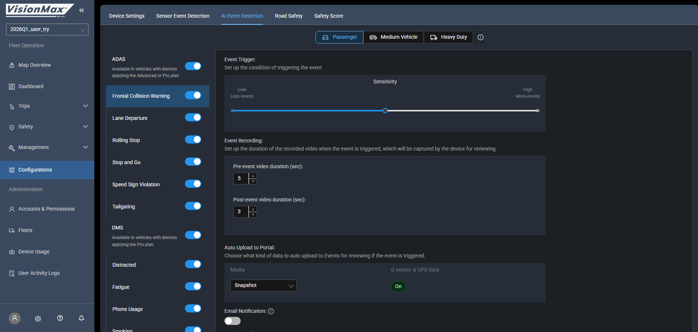
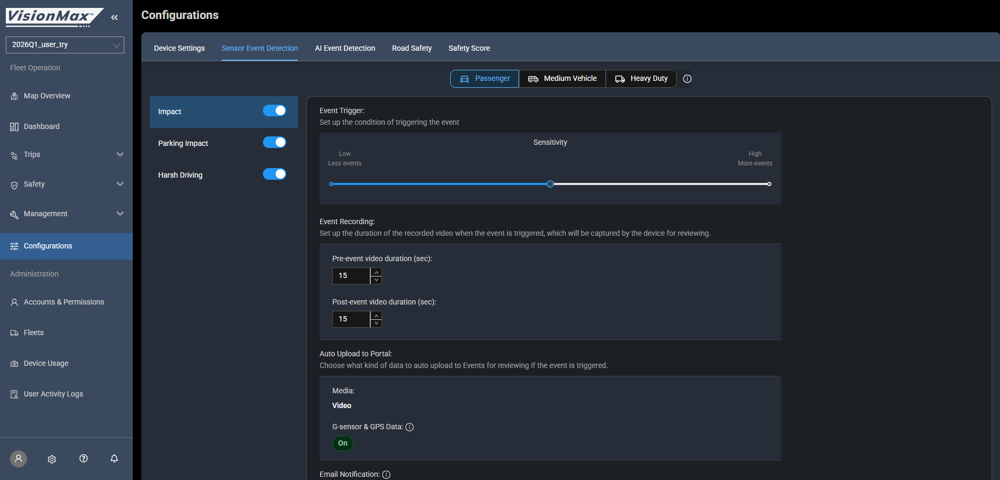

Portal 雙層架構
👉 完整客戶簡報(25 頁中文):Portal Client Briefing · 海外技術對接(55 頁英文):Architecture & Integration
雙層架構
| 層 | URL | 視角 | 使用者 |
|---|---|---|---|
| Master Portal | portal.visionmaxfleet.com |
跨 fleet 設備池總管 | Dealer / 經銷商 / MAU |
| Fleet Portal | www.visionmaxfleet.com |
單一 fleet 內運營 | Fleet Manager / 客戶 / 內部 PM |
→ 設備 flow:Master Portal 把 CDR 分配 / 開通給 Fleet → Fleet Portal 運營
Fleet Portal 19 頁(Kenny 名下測試帳號可登入)
2026Q1_user_try (fleet 選擇器) ← PDF 漏
─────────────
Fleet Operation ← PDF 漏(整段)
├─ Map Overview ← PDF 漏
├─ Dashboard
├─ Trips: List / Detail / Report
├─ Safety: Events / Detail / File Retrieval / Safety Reports / Coaching ← Coaching PDF 漏
├─ Management: Devices / Drivers / Vehicles / Geofences ← Drivers/Vehicles PDF 漏
└─ Configurations(5 tabs:Device Settings / Sensor / AI / Road Safety / Safety Score)
Administration ← PDF 漏(整段)
├─ Accounts & Permissions
├─ Fleets(2 tabs:Fleets / Contract Fleets)
├─ Device Usage
└─ User Activity Logs
Master Portal 7 頁
Master Portal
├─ Dashboard(4 panel:Total Devices / Healthy-Unhealthy / Activated / Total Fleets)
├─ Analysis(Plan Types 折線圖,2 tabs:Assigned Device / Fleets)
├─ Management
│ ├─ Inventory(IMEI / Recalls / 待分配設備)
│ ├─ Diagnostics ← PDF 漏
│ ├─ Fleets ← PDF 漏(跨 fleet 列表 + New Fleet)
│ └─ User Account ← PDF 漏(Admin / Viewer roles)
└─ User Activity Logs ← PDF 漏
Fleet Portal 主要頁面實際截圖
從 Kenny 名下測試帳號截圖。對客戶 demo + 內部訓練用。完整 21 張在
VMX_images/Fleet/。
Map Overview — 即時車隊地圖
 Fleet Portal 入口頁,所有車輛即時位置 / 軌跡 / events 標示。客戶 demo 開場必用。
Fleet Portal 入口頁,所有車輛即時位置 / 軌跡 / events 標示。客戶 demo 開場必用。
Dashboard — KPI 儀表板
 Safety Score / Trip count / Distance / Events 統計。Fleet Manager 每天打開的頁。
Safety Score / Trip count / Distance / Events 統計。Fleet Manager 每天打開的頁。
Safety > Events — 事件列表
 所有 ADAS / DMS / G-Sensor 事件清單。5/6 會議 HDFE 抱怨的就是這頁的 Q1 改版(點擊次數變多)。
所有 ADAS / DMS / G-Sensor 事件清單。5/6 會議 HDFE 抱怨的就是這頁的 Q1 改版(點擊次數變多)。
Trip List — 行程列表
 依車輛 / 日期 / 駕駛過濾的 trip 紀錄。VMX-7404 ADAS Failure 案件的 trip 7028714 / 7079470 從這找。
依車輛 / 日期 / 駕駛過濾的 trip 紀錄。VMX-7404 ADAS Failure 案件的 trip 7028714 / 7079470 從這找。
Configurations > AI Events Detection — AI 事件設定

Fatigue / Distraction / Phone / Smoking / Yawning sub-toggle 的設定頁。5/6 會議 Yawning 獨立開關 + Lucy UI(VMX-7432)就要加在這頁。Configurations > Sensor Event Detection — G-Sensor 設定

Harsh Braking / Cornering / Driving Impact / Parking Impact / Harsh Acceleration / Rollover 6 種事件門檻。Mori 200Hz G-Sensor 議題 + Rollover detection 都對應這頁。Management > Devices — 設備管理
 單一 fleet 內所有 K-series 設備清單,App Version / ADAS+DMS Health 顯示。
單一 fleet 內所有 K-series 設備清單,App Version / ADAS+DMS Health 顯示。
Accounts & Permissions — 帳號權限
 L2 Account 管理(Admin / Viewer Only roles)。5/6 會議 VMX-7088 Viewer Only 角色「detail 能不能看」議題對應這頁。
L2 Account 管理(Admin / Viewer Only roles)。5/6 會議 VMX-7088 Viewer Only 角色「detail 能不能看」議題對應這頁。
完整 21 張其他頁面(Trip Report / Safety Reports / File Retrieval / Drivers / Vehicles / Geofences / Device Usage / User Activity Logs / Configurations 其他 4 tabs / Dashboard II / Fleets tab)在
VMX_images/Fleet/,需要時直接 reference。
3-Tier User Model
| L | 在哪管 | 對象 | 權限範圍 |
|---|---|---|---|
| L1 | Master > User Account(14 人) | 經銷商員工 | 跨 fleet |
| L2 | Fleet > A&P(8 人) | 單 fleet portal 用戶 | 單一 fleet |
| L3 | Fleet > Drivers(1 人 = Kenny) | 駕駛員(被 RFID 識別) | 不上 portal |
新 Viewer Only 角色(VMX-7088,2026-05-06 會議討論):不能 Delete / Edit / Download / Retrieve / Configuration — 「detail 能不能看」待釐清。
Fleet Portal 三大 Entity
Device(車機)── K-series 硬體 / App Version / ADAS+DMS Health
│
├─ via Vehicle Profile binding
▼
Vehicle(車輛)── VIN / Year/Make/Model / Vehicle Type
│
Driver(駕駛)── Employee ID / IC Card S/N / Email
Contract Fleet 真相(PDF 沒寫)
PDF 只承認 2 種商業身分:Dealer + Customer。
但 Fleet Portal Admin > Fleets 上有 Contract Fleets tab,且按鈕是 + New Account(不是 + New Contract Fleet)→ 三種解釋:
- UI 超前 PDF
- UI 殘留
- 最可能:Account-based 模擬(account 跨 fleet 共用,不是真 sub-fleet)
→ PM 風險:Sales 用這個灰色地帶銷售,可能簽約後 RD 交不出。
PDF 漏掉率
- Fleet Portal nav:50% 漏(19 頁中 PDF 列 9)
- Master Portal nav:57% 漏(7 頁中 PDF 列 3)
- 頁面深度(按鍵 / 欄位):>80% 漏
- 整體系統理解:~70% 沒覆蓋
→ 「PDF 補強 Wiki ticket」的論據(待跟 Brian 推)。